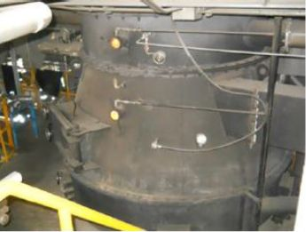
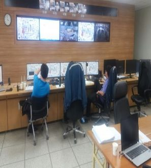

전라북도 익산시
익산공장 — SRF 기반 열에너지 생산 · 공급 거점
SRF 연료로 스팀과 열매를 생산하여 한솔홈데코 및 인근 산업단지에 안정적으로 공급하는 신재생에너지 생산기지입니다.
- BOILER TYPE
- Turning Stoker
(선회화염 연소방식) - STEAM CAPACITY
- 15 T/h × 2 Line
- STEAM
- 197℃ 이상 · 15 ㎏/㎠.G
- FUEL
- SRF (RPF)
- AQCS
- Furnace ⇒ SNCR ⇒ SDR ⇒ DR ⇒ Bag-filter ⇒ Stack
- OPERATION
- Continuous
- 수요처
- ㈜한솔홈데코 익산공장 / 상공에너지
- 스팀터빈발전
- 없음

